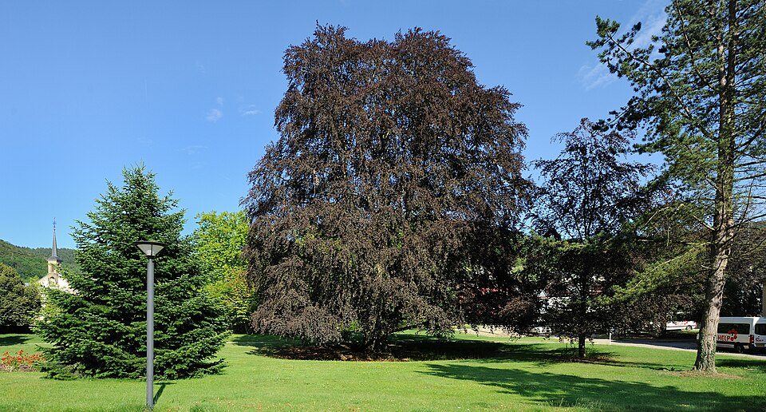

Fagus — Beech (Beuk)
A brooding, shadow-casting sovereign who poisons the ground beneath her so nothing else dares grow — slow to wake, impossible to move.
Combat flavor
Dense wood and allelopathic litter make the Beech a slow but crushing fighter who debuffs nearby enemies just by existing — a Bruiser who wins by denying the enemy ground before the first blow is even struck.
Real-world facts
Typical / max height25–35 m typical; up to 50 m maximum
Lifespan150–300 years; exceptional specimens exceed 500 years
Wood~720 kg/m³ (air-dry); dense, hard, ring-porous hardwood; excellent for heavy structural and furniture use
Growth speedMedium
Ecology / notable traitsStrong allelopathic effect — slowly decomposing leaf and mast litter releases compounds that suppress germination of competing plants; beechnuts (beechmast) contain fagin (trimethylamine) and saponins, mildly toxic to livestock; dense canopy blocks light so thoroughly that few plants survive beneath; mast seeding years dramatically reshape local fungal communities; culturally iconic in northern European forests
Gallery
